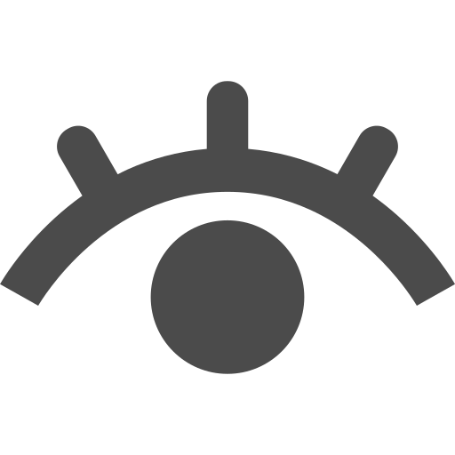

建物の劣化具合
建物の劣化具合
木造住宅の劣化具合を調べることができます
準備中...
utils.jsをローディングしています...
xmlの処理でエラー
診断中...しばらくお待ちください...
注目ポイント
・壁に ひび割れや 隙間はありませんか？
・家に 強い日差しが当たりますか？
・風通しは良いですか？
→ 湿気がたまると 木がくさり、白アリ発生 の原因となってしまいます。
経過年数の診断方法
ご利用方法は かんたんです。 「写真を選択する」をクリックして 木造建築が映った写真を 選択してください。 診断が完了次第、新しく表示された写真と 注目ポイントをご覧ください。
プライバシーの保障
診断結果や 写真が だれかに勝手に公表されることはありません。そのため、だれかに 診断結果が勝手に公表されることはなく、安心してご利用いただけます。

色んなデバイスから確認可
当サイトは、パソコンやスマホなどあらゆるデバイスから確認することができます。 また、MacやWindows、LinuxなどOSを問わず ご利用できます。